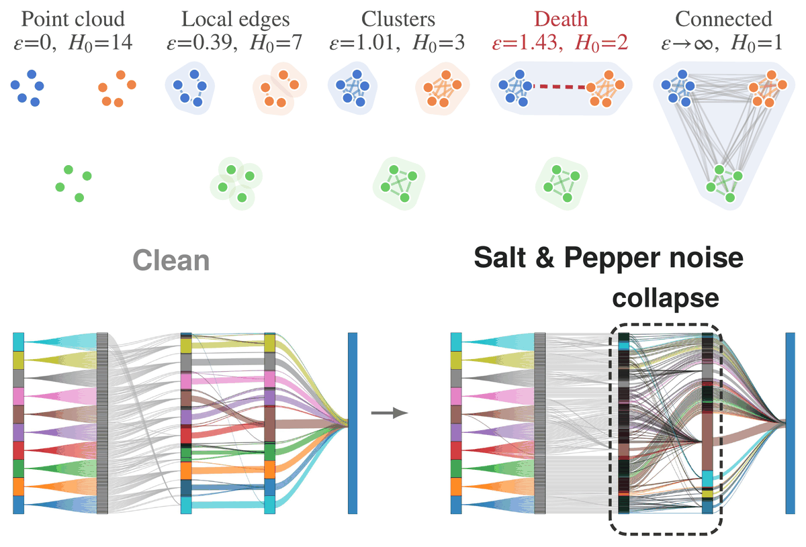
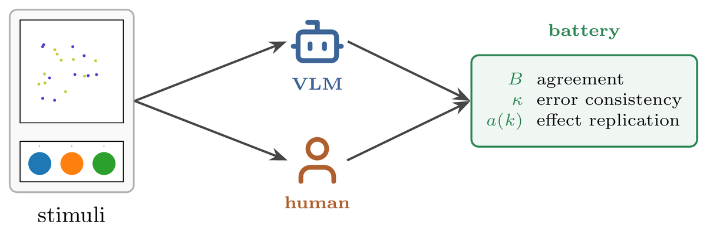

E-mail: sud (dot) athreya (at) utah (dot) edu
Github: FoxHound0x00
LinkedIn: athreya32262
I'm a PhD student in Computer Science at the University of Utah. I work with Paul Rosen at the SCI Institute on interpreting neural networks with topology, and with Warren Pettine at the Medical Machine Intelligence Lab on foundation models for electronic health records.
Research: Explainable AI (XAI), Topological Data Analysis (TDA), EHR Foundation Models, Representation Learning, Visualization

HOLE: Homological Observation of Latent Embeddings for Neural Network Interpretability
Sudhanva Manjunath Athreya, Paul Rosen
arXiv preprint, 2025
We use persistent homology to see how each layer of a network
separates the classes, and show it in an interactive dashboard.
Paper |
Code

More Accurate, Less Human: Gestalt Grouping in Vision Models
Sudhanva Manjunath Athreya, Sai Phani Kumar Malladi
VISxVision 2026
Most vision models beat people at grouping shapes and colors,
but they don't make the same mistakes people do.
Paper